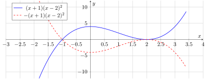
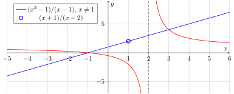
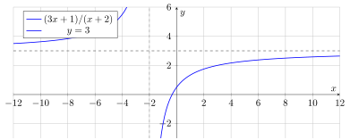
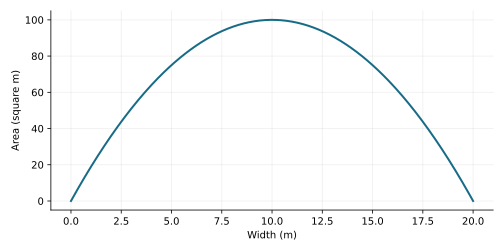

Polynomial and Rational Functions
Opening context: interpreting nonlinear response
A laboratory response may rise and then fall, or it may increase rapidly before leveling off. Polynomials provide flexible curves, while rational functions can model saturation and discontinuities. In this chapter, algebraic structure, graphical features, and computational checks work together. The central questions are: Where is a model zero? Where is it defined? How does it behave near a critical input or far from the origin? And what does that behavior mean in context?
Learning outcomes
After completing this chapter, students should be able to classify and evaluate polynomials; determine end behavior; factor and solve polynomial equations; use synthetic division and the remainder and factor theorems; interpret zeros and multiplicities; solve polynomial inequalities; determine domains and discontinuities of rational functions; locate holes and asymptotes; graph rational models; solve rational inequalities; and use R and Python to check algebraic and graphical conclusions.
Prerequisite check
Review factoring, quadratic equations, function domains, transformations, and interval notation. Factor \(x^2-9\); solve \((x-1)(x+4)=0\); and state why \(1/(x-2)\) is undefined at \(x=2\). Answers: \((x-3)(x+3)\), \(x=1,-4\), and division by zero is undefined.
Roadmap
We begin with polynomial structure and zeros, move from algebraic factors to graphs and inequalities, then study rational functions and their excluded inputs, holes, asymptotes, and applications. Each step is paired with a visual or computational investigation.
Polynomials: structure and terminology
A polynomial has the form \(P(x)=a_nx^n+\cdots+a_1x+a_0\), where \(n\) is a nonnegative integer, \(a_n\ne0\), and the coefficients are real. The degree is \(n\), the leading coefficient is \(a_n\), and \(a_0\) is the constant term. Polynomial functions are defined and continuous for every real input. A polynomial is not the same as a rational function: \(x^{-1}\), \(\sqrt{x}\), and \(1/(x-2)\) are not polynomial terms.
Example 1: Polynomials: structure and terminology. Classify \(P(x)=4-3x^2+2x^5\) by degree and leading coefficient.
Worked solution. Rewriting in descending powers gives \(2x^5-3x^2+4\). Its degree is \(5\) and leading coefficient is \(2\).
Guided practice 1.
Classify \(-7x^4+2x-9\) and explain why \(x^{1/2}+3\) is not a polynomial. Show each algebraic step, check any excluded values, and interpret your conclusion.
Visual investigation.
Create a small table of values near the relevant intercepts, turning points, or domain boundaries. Sketch the behavior before using software, then compare the sketch with a graph. Explain one feature the table reveals and one feature it cannot establish on its own.
Polynomial evaluation and the remainder theorem
Use substitution or Horner’s method to evaluate a polynomial. Dividing \(P(x)\) by \(x-c\) produces a remainder equal to \(P(c)\); this is the remainder theorem. Horner’s method efficiently evaluates a polynomial while avoiding repeated powers. For a model, always interpret the input units and the units of the predicted output.
Example 2: Polynomial evaluation and the remainder theorem. Evaluate \(P(x)=2x^3-3x^2+4x-5\) at \(x=2\).
Worked solution. \(P(2)=16-12+8-5=7\). Thus the remainder on division by \(x-2\) is \(7\).
Guided practice 2.
Use the remainder theorem to find the remainder when \(x^3-4x+1\) is divided by \(x+2\). Show each algebraic step, check any excluded values, and interpret your conclusion.
Visual investigation.
Create a small table of values near the relevant intercepts, turning points, or domain boundaries. Sketch the behavior before using software, then compare the sketch with a graph. Explain one feature the table reveals and one feature it cannot establish on its own.
End behavior and leading-term dominance
For sufficiently large positive or negative inputs, the leading term \(a_nx^n\) dominates lower-degree terms. Even-degree polynomials have ends pointing in the same direction; odd-degree polynomials have ends pointing in opposite directions. The sign of \(a_n\) determines whether the right end rises or falls. This is a statement about long-run behavior, not necessarily the shape near the origin.
Example 3: End behavior and leading-term dominance. Describe both ends of \(P(x)=-2x^5+7x^2-1\).
Worked solution. Because the leading term is \(-2x^5\), \(P(x)\to+\infty\) as \(x\to-\infty\) and \(P(x)\to-\infty\) as \(x\to+\infty\).
Guided practice 3.
Describe the end behavior of \(3x^4-2x^3+1\) and \(-x^6+2x\). Show each algebraic step, check any excluded values, and interpret your conclusion.
Visual investigation.
Create a small table of values near the relevant intercepts, turning points, or domain boundaries. Sketch the behavior before using software, then compare the sketch with a graph. Explain one feature the table reveals and one feature it cannot establish on its own.
Zeros, factors, and the zero-product property
A real number \(c\) is a zero of \(P\) exactly when \(P(c)=0\). By the factor theorem, this happens exactly when \(x-c\) is a factor. In a factored polynomial, apply the zero-product property: a product is zero if at least one factor is zero. A zero corresponds to an \(x\)-intercept of the graph. The number of distinct real zeros can be less than the degree.
Example 4: Zeros, factors, and the zero-product property. Find the zeros of \(P(x)=(x-2)(x+1)(x-4)\).
Worked solution. The zeros are \(2,-1,4\). Each gives an \(x\)-intercept \((c,0)\).
Guided practice 4.
Find the zeros of \(x(x-3)^2(x+5)\) and list the distinct intercepts. Show each algebraic step, check any excluded values, and interpret your conclusion.
Visual investigation.
Create a small table of values near the relevant intercepts, turning points, or domain boundaries. Sketch the behavior before using software, then compare the sketch with a graph. Explain one feature the table reveals and one feature it cannot establish on its own.
Multiplicity and crossing versus touching
If \((x-c)^m\) divides \(P\) but \((x-c)^{m+1}\) does not, \(c\) has multiplicity \(m\). An odd multiplicity generally makes the graph cross the horizontal axis; an even multiplicity makes it touch and turn. Higher multiplicities often flatten the graph near the intercept. Multiplicity counts toward the degree, whereas the number of distinct intercepts does not.
Example 5: Multiplicity and crossing versus touching. Describe the graph near each zero of \((x+2)^2(x-1)^3\).
Worked solution. At \(-2\) (multiplicity \(2\)), the graph touches and turns. At \(1\) (multiplicity \(3\)), it crosses with flattening.
Guided practice 5.
Explain how \(x^2(x-3)\) behaves near each zero. Show each algebraic step, check any excluded values, and interpret your conclusion.
Visual investigation.
Create a small table of values near the relevant intercepts, turning points, or domain boundaries. Sketch the behavior before using software, then compare the sketch with a graph. Explain one feature the table reveals and one feature it cannot establish on its own.
Factoring and solving polynomial equations
Useful techniques include common factors, grouping, difference of squares, perfect-square trinomials, and substitution in quadratic form. Always verify a factorization by multiplying it out. Some higher-degree equations cannot be solved by elementary factoring; numerical approximation and graphing then become useful, but an approximate root should not be presented as exact.
Example 6: Factoring and solving polynomial equations. Solve \(x^4-5x^2+4=0\) by substitution.
Worked solution. Let \(u=x^2\). Then \((u-1)(u-4)=0\), so \(x^2=1\) or \(x^2=4\). Hence \(x=\pm1,\pm2\).
Guided practice 6.
Solve \(2x^3-8x=0\) and verify each solution. Show each algebraic step, check any excluded values, and interpret your conclusion.
Visual investigation.
Create a small table of values near the relevant intercepts, turning points, or domain boundaries. Sketch the behavior before using software, then compare the sketch with a graph. Explain one feature the table reveals and one feature it cannot establish on its own.
Polynomial division and synthetic division
Long division expresses \(P(x)=D(x)Q(x)+R(x)\) with \(\deg R<\deg D\). Synthetic division is a streamlined method when the divisor is \(x-c\). It is useful for testing candidate zeros and reducing the degree after one factor is known. The quotient and remainder must always satisfy the division identity.
Example 7: Polynomial division and synthetic division. Divide \(x^3-2x^2-5x+6\) by \(x-1\).
Worked solution. Synthetic division with \(1\) and coefficients \(1,-2,-5,6\) yields quotient \(x^2-x-6\) and remainder \(0\). Thus \(P(x)=(x-1)(x-3)(x+2)\).
Guided practice 7.
Divide \(x^3+2x^2-3x+4\) by \(x+1\) and check the remainder. Show each algebraic step, check any excluded values, and interpret your conclusion.
Visual investigation.
Create a small table of values near the relevant intercepts, turning points, or domain boundaries. Sketch the behavior before using software, then compare the sketch with a graph. Explain one feature the table reveals and one feature it cannot establish on its own.
Rational and complex zeros
For an integer-coefficient polynomial, any rational zero in lowest terms \(p/q\) has numerator dividing the constant term and denominator dividing the leading coefficient. This theorem generates candidates, not guarantees. Complex nonreal zeros occur in conjugate pairs when the coefficients are real. A degree-\(n\) polynomial has exactly \(n\) complex zeros counting multiplicity (fundamental theorem of algebra).
Example 8: Rational and complex zeros. List possible rational zeros of \(2x^3-3x^2-8x+12\).
Worked solution. Candidates are \(\pm1,\pm2,\pm3,\pm4,\pm6,\pm12\) and \(\pm\frac12,\pm\frac32\). Test candidates before claiming any are roots.
Guided practice 8.
List the possible rational zeros of \(3x^3+2x^2-5x-2\). Show each algebraic step, check any excluded values, and interpret your conclusion.
Visual investigation.
Create a small table of values near the relevant intercepts, turning points, or domain boundaries. Sketch the behavior before using software, then compare the sketch with a graph. Explain one feature the table reveals and one feature it cannot establish on its own.
Polynomial graphs and turning points
A degree-\(n\) polynomial has at most \(n-1\) turning points. To sketch a polynomial, identify the degree and leading coefficient, intercepts and multiplicities, and selected points between zeros. A graph is evidence for a conjecture, but algebra establishes exact intercepts and signs. Graphing windows can hide distant roots or turning points.
Example 9: Polynomial graphs and turning points. Sketch \(P(x)=(x+1)(x-2)^2\) using its zeros and leading term.
Worked solution. The graph crosses at \(-1\), touches at \(2\), and rises to the right because the leading term is \(x^3\). Its left end falls.
Guided practice 9.
Sketch \(-(x+2)(x-1)^2\) and state how it differs from the preceding example. Show each algebraic step, check any excluded values, and interpret your conclusion.
Visual investigation.
Create a small table of values near the relevant intercepts, turning points, or domain boundaries. Sketch the behavior before using software, then compare the sketch with a graph. Explain one feature the table reveals and one feature it cannot establish on its own.
Polynomial inequalities and sign charts
To solve \(P(x)>0\) or \(P(x)\le0\), factor when possible and mark all real zeros on a number line. Test the sign on each interval. At a zero of odd multiplicity, the sign changes; at a zero of even multiplicity, it does not. Include zeros for non-strict inequalities and exclude them for strict inequalities.
Example 10: Polynomial inequalities and sign charts. Solve \((x+2)(x-1)>0\).
Worked solution. The sign is positive on \((-\infty,-2)\) and \((1,\infty)\), so the solution is their union.
Guided practice 10.
Solve \(x(x-2)^2\le0\) with a sign chart. Show each algebraic step, check any excluded values, and interpret your conclusion.
Visual investigation.
Create a small table of values near the relevant intercepts, turning points, or domain boundaries. Sketch the behavior before using software, then compare the sketch with a graph. Explain one feature the table reveals and one feature it cannot establish on its own.
Rational functions and domains
A rational function has the form \(R(x)=P(x)/Q(x)\), where \(P,Q\) are polynomials and \(Q\not\equiv0\). Its domain excludes every real zero of the original denominator. Even if a factor cancels algebraically, the excluded input remains excluded: the simplified expression agrees only where the original was defined. Distinguish an algebraic simplification from an extension of a function.
Example 11: Rational functions and domains. Find the domain of \(R(x)=(x^2-4)/(x^2-x-6)\).
Worked solution. The denominator factors as \((x-3)(x+2)\), so the domain is \(\mathbb R\setminus\{-2,3\}\). Cancellation with \(x+2\) does not restore \(x=-2\).
Guided practice 11.
Find the domain of \((x^2-9)/(x^2-5x+6)\). Show each algebraic step, check any excluded values, and interpret your conclusion.
Visual investigation.
Create a small table of values near the relevant intercepts, turning points, or domain boundaries. Sketch the behavior before using software, then compare the sketch with a graph. Explain one feature the table reveals and one feature it cannot establish on its own.
Holes and vertical asymptotes
If a denominator factor cancels with the numerator, the original function may have a removable discontinuity, shown as a hole. A denominator factor that remains after cancellation typically produces a vertical asymptote. To locate a hole, simplify and evaluate the simplified expression at the excluded input. To analyze a vertical asymptote, examine the signs of factors on either side.
Example 12: Holes and vertical asymptotes. Analyze \(R(x)=(x^2-1)/(x-1)\).
Worked solution. For \(x\ne1\), \(R(x)=x+1\). The graph is the line \(y=x+1\) with a hole at \((1,2)\), not a vertical asymptote.
Guided practice 12.
Identify the hole and vertical asymptote of \((x^2-4)/[(x-2)(x-3)]\). Show each algebraic step, check any excluded values, and interpret your conclusion.
Visual investigation.
Create a small table of values near the relevant intercepts, turning points, or domain boundaries. Sketch the behavior before using software, then compare the sketch with a graph. Explain one feature the table reveals and one feature it cannot establish on its own.
Horizontal and slant asymptotes
Compare the degrees of numerator and denominator. If the numerator degree is smaller, the horizontal asymptote is \(y=0\). If degrees are equal, it is the ratio of leading coefficients. If the numerator degree is exactly one greater, polynomial division gives a slant (oblique) asymptote. A horizontal asymptote describes end behavior and can be crossed by the graph.
Example 13: Horizontal and slant asymptotes. Find the horizontal asymptote of \((3x^2+1)/(2x^2-5)\).
Worked solution. Both degrees are \(2\), so the horizontal asymptote is \(y=3/2\).
Guided practice 13.
Find the end-behavior asymptote of \((x^2+1)/(x-1)\) using division. Show each algebraic step, check any excluded values, and interpret your conclusion.
Visual investigation.
Create a small table of values near the relevant intercepts, turning points, or domain boundaries. Sketch the behavior before using software, then compare the sketch with a graph. Explain one feature the table reveals and one feature it cannot establish on its own.
Graphing rational functions systematically
Start with the original domain, factor numerator and denominator, mark zeros and excluded inputs, classify holes and asymptotes, compute intercepts, and use interval sign tests. The behavior on either side of a vertical asymptote may differ. Do not draw a continuous curve through an excluded input. Confirm with numerical tables close to the discontinuities.
Example 14: Graphing rational functions systematically. Sketch \(R(x)=(x+1)/(x-2)\) and identify its intercepts and asymptotes.
Worked solution. The \(x\)-intercept is \(-1\), the \(y\)-intercept is \(-1/2\), the vertical asymptote is \(x=2\), and the horizontal asymptote is \(y=1\).
Guided practice 14.
Analyze \(R(x)=(2x-4)/(x+3)\) using a domain, intercept, and asymptote checklist. Show each algebraic step, check any excluded values, and interpret your conclusion.
Visual investigation.
Create a small table of values near the relevant intercepts, turning points, or domain boundaries. Sketch the behavior before using software, then compare the sketch with a graph. Explain one feature the table reveals and one feature it cannot establish on its own.
Rational inequalities and critical points
To solve a rational inequality, bring everything to one side and identify both zeros of the numerator and zeros of the denominator. Use a sign chart on the resulting intervals. Include numerator zeros when the inequality permits equality; never include denominator zeros. Multiplying an inequality by an expression of unknown sign can reverse the inequality, so avoid that shortcut.
Example 15: Rational inequalities and critical points. Solve \((x-1)/(x+2)\ge0\).
Worked solution. The critical points are \(-2\) (excluded) and \(1\) (included). The solution is \((-\infty,-2)\cup[1,\infty)\).
Guided practice 15.
Solve \((x+3)/(x-2)<0\) and explain endpoint exclusions. Show each algebraic step, check any excluded values, and interpret your conclusion.
Visual investigation.
Create a small table of values near the relevant intercepts, turning points, or domain boundaries. Sketch the behavior before using software, then compare the sketch with a graph. Explain one feature the table reveals and one feature it cannot establish on its own.
Applications: response, saturation, and limits
Polynomial models can approximate a response over a bounded interval; rational models can represent saturation. For example \(S(c)=120c/(8+c)\) models a response approaching \(120\) as concentration \(c\) grows, with \(c\ge0\) physically meaningful. The mathematical domain excludes \(-8\), but the scientific domain is narrower. Interpret asymptotes in the units of the model and avoid extrapolating beyond the range supported by observations.
Example 16: Applications: response, saturation, and limits. For \(S(c)=120c/(8+c)\), find \(S(8)\) and the long-run response.
Worked solution. \(S(8)=60\). As \(c\to\infty\), \(S(c)\to120\), a horizontal saturation level.
Guided practice 16.
For \(S(c)=90c/(5+c)\), find the half-saturation concentration and explain its meaning. Show each algebraic step, check any excluded values, and interpret your conclusion.
Visual investigation.
Create a small table of values near the relevant intercepts, turning points, or domain boundaries. Sketch the behavior before using software, then compare the sketch with a graph. Explain one feature the table reveals and one feature it cannot establish on its own.
Visual investigation I: zeros and multiplicity

Investigate. Identify the zeros and their multiplicities. Why does the curve cross at one intercept but touch at the other? What changes when the polynomial is multiplied by \(-1\)? Estimate the sign of each function on the intervals determined by the zeros.
Visual investigation II: holes versus asymptotes

Investigate. Why is \((1,2)\) an excluded point on one graph, while \(x=2\) is a vertical asymptote on the other? Evaluate both expressions at inputs approaching their excluded values from the left and right. Explain why cancellation does not change the original domain.
Visual investigation III: rational end behavior

Investigate. Use polynomial division to rewrite the rational expression as \(3-5/(x+2)\). Predict which side of \(y=3\) the curve occupies for large positive and negative \(x\). Explain why the horizontal asymptote is not a bound on the range.
Extended workshop A: polynomial design and sensitivity
A response curve is modeled by \(P(t)=-(t-1)(t-5)(t-8)\) for \(0\le t\le9\), where \(t\) is hours. (a) Find the three zero-response times. (b) Determine the sign of \(P\) on each interval. (c) Explain why negative predicted responses may indicate the model is unsuitable in part of its domain. (d) Compare \(P(t)\) with \(P(t)+2\) and discuss the effect of a baseline adjustment. (e) Use numerical tables to estimate turning points, making clear that these are approximations.
Worked discussion.
The zeros are \(1,5,8\). The leading coefficient is negative, so the graph falls to the right. Sign tests at \(t=0,3,6,9\) establish the alternating signs. A constant baseline adjustment shifts every output up by two without changing the input domain, but it generally changes the zeros. A mathematical model must be checked against physical constraints.
Extended workshop B: rational calibration and physical domains
A response model is \(S(c)=100c/(10+c)\), where \(c\ge0\) is concentration in mg/L and \(S\) is signal units. (a) Find the mathematical domain and the physical domain. (b) Compute \(S(0)\), \(S(10)\), and \(S(30)\). (c) Find the horizontal asymptote and interpret it. (d) Solve \(S(c)=80\). (e) Explain why the vertical asymptote at \(c=-10\) is not physically relevant.
Worked solution.
The mathematical domain is \(\mathbb R\setminus\{-10\}\), and the physical domain is \([0,\infty)\). The signals are \(0\), \(50\), and \(75\). The saturation level is \(100\). Solving \(100c/(10+c)=80\) gives \(100c=800+80c\), hence \(c=40\) mg/L. Negative concentration is not part of the intended model.
Extended workshop C: comparing two models
Consider \(P(c)=12c-c^2\) and \(R(c)=72c/(6+c)\) for \(0\le c\le12\). (a) Graph both on the same axes. (b) Find where \(P(c)=0\) and where \(R(c)=0\). (c) Compare their long-run mathematical behavior outside the stated interval. (d) Explain why neither extrapolation is automatically justified by a good fit over \([0,12]\). (e) Use a table at \(c=0,3,6,9,12\) to compare predicted responses.
Worked discussion.
The polynomial has zeros \(0\) and \(12\); the rational model has zero \(0\). The polynomial eventually decreases without bound as \(c\to+\infty\), while the rational model approaches \(72\). The models represent different scientific assumptions, and neither should be extrapolated without evidence.
Computational laboratory A: polynomial zeros and multiplicity
Purpose. Plot a factored polynomial and verify its zeros numerically. First predict the crossings and touches from the factors.
R code
# Chapter 6 computational laboratories - run from top to bottom
# LAB A: polynomial zeros and multiplicity
p <- function(x) (x+1)*(x-2)^2
x <- seq(-3, 4, length.out=600)
plot(x, p(x), type="l", col="blue", lwd=2,
xlab="x", ylab="P(x)", main="Polynomial zeros and multiplicity")
abline(h=0, lty=2)
points(c(-1,2), c(0,0), pch=19, col="red")
print(data.frame(zero=c(-1,2), value=p(c(-1,2))))
# LAB B: rational function and vertical asymptote
rfun <- function(x) (x+1)/(x-2)
left <- seq(-5, 1.85, length.out=300)
right <- seq(2.15, 7, length.out=300)
plot(left, rfun(left), type="l", col="blue", lwd=2,
xlim=c(-5,7), ylim=c(-12,12), xlab="x", ylab="R(x)",
main="Rational function with asymptotes")
lines(right, rfun(right), col="blue", lwd=2)
abline(v=2, h=1, col="red", lty=2)
# LAB C: saturation model
S <- function(c) 100*c/(10+c)
c <- seq(0,100,length.out=300)
plot(c,S(c),type="l",lwd=2,col="blue",xlab="Concentration (mg/L)",
ylab="Signal",main="Saturation response")
abline(h=100,col="red",lty=2)
print(data.frame(concentration=c(0,10,30,40),signal=S(c(0,10,30,40))))
stopifnot(abs(S(40)-80)<1e-10)Python code
# Chapter 6 computational laboratories - run from top to bottom
import numpy as np
import matplotlib.pyplot as plt
# LAB A: polynomial zeros and multiplicity
def P(x): return (x+1)*(x-2)**2
x = np.linspace(-3,4,600)
plt.figure(); plt.plot(x,P(x),label="(x+1)(x-2)^2")
plt.scatter([-1,2],[0,0]); plt.axhline(0,color="gray",linestyle="--")
plt.xlabel("x"); plt.ylabel("P(x)"); plt.grid(True); plt.legend(); plt.show()
print("Exact zeros:",[-1,2],"Values:",P(np.array([-1,2])))
# LAB B: rational function and vertical asymptote
def R(x): return (x+1)/(x-2)
left=np.linspace(-5,1.85,300); right=np.linspace(2.15,7,300)
plt.figure(); plt.plot(left,R(left),color="blue"); plt.plot(right,R(right),color="blue")
plt.axvline(2,color="red",linestyle="--",label="x=2")
plt.axhline(1,color="gray",linestyle="--",label="y=1")
plt.ylim(-12,12); plt.xlabel("x"); plt.ylabel("R(x)"); plt.legend(); plt.grid(True); plt.show()
# LAB C: saturation model
def S(c): return 100*c/(10+c)
c=np.linspace(0,100,300)
plt.figure(); plt.plot(c,S(c)); plt.axhline(100,color="red",linestyle="--")
plt.xlabel("Concentration (mg/L)"); plt.ylabel("Signal"); plt.grid(True); plt.show()
for value in [0,10,30,40]: print(value, S(value))
assert abs(S(40)-80)<1e-10Interpretation questions.
Compare exact factored zeros with numerical output. Explain why a numerical grid may fail to land exactly on a zero of even multiplicity. What information does a plot reveal about end behavior?
Computational laboratory B: rational discontinuities
The scripts also plot a rational function on two separate intervals around its vertical asymptote and draw the asymptote explicitly. Use the algebraic domain to explain why the plot must not connect across the excluded input. Change the denominator and repeat.
Computational laboratory C: applied saturation
The scripts evaluate \(S(c)=100c/(10+c)\) on \(0\le c\le100\), plot the horizontal saturation level, and calculate the concentration that produces \(80\) signal units. Explain the distinction between a numerical estimate and the exact algebraic solution.
Calculus readiness: behavior near an excluded input
The rational function \(R(x)=(x^2-1)/(x-1)\) equals \(x+1\) whenever \(x\ne1\), but it is not defined at \(x=1\). A later calculus course asks what values \(R(x)\) approaches as \(x\) gets close to \(1\); this question is different from evaluating \(R(1)\). Likewise, a horizontal asymptote describes what happens as the input grows without bound. These ideas motivate limits and continuity.
Concept check 1. Explain, in words, the difference between \(R(1)\) and the value approached by \(R(x)\) as \(x\) approaches \(1\) for \(R(x)=(x^2-1)/(x-1)\).
Chapter review exercises
Identify the degree and leading coefficient of \(5x^6-2x^4+x-7\).
Evaluate \(2x^3-5x+1\) at \(x=-2\).
State the end behavior of \(-3x^4+7x^2\).
State the end behavior of \(2x^5-x^2+1\).
Factor \(x^3-4x\) and list its real zeros.
Solve \(x^4-10x^2+9=0\).
Identify zeros and multiplicities of \((x-1)^2(x+3)^3\).
Sketch \(-(x+2)(x-4)^2\) using intercepts and end behavior.
Find the remainder on division of \(x^3-2x+5\) by \(x-2\).
Use synthetic division to divide \(x^3-4x^2+x+6\) by \(x-2\).
List rational-zero candidates for \(2x^3+x^2-8x-4\).
Solve \((x-2)(x+5)\le0\).
Solve \(x(x-1)^2>0\).
Determine the domain of \((x^2-4)/(x^2-x-6)\).
Determine whether \((x^2-9)/(x-3)\) has a hole or a vertical asymptote at \(3\).
Find all vertical asymptotes of \((x+1)/(x^2-9)\).
Find the horizontal asymptote of \((5x^2+3)/(2x^2+1)\).
Find the slant asymptote of \((x^2+3x+1)/(x+1)\).
Solve \((x-4)/(x+2)\ge0\).
Solve \((x+1)/(x-3)<0\).
For \(S(c)=80c/(4+c)\), calculate \(S(4)\) and the saturation level.
For \(S(c)=120c/(8+c)\), solve \(S(c)=90\).
Explain why a graphing window can hide a polynomial zero.
Explain why canceling factors does not restore excluded inputs.
Compare a polynomial model and a rational saturation model for large inputs.
Create an R or Python plot of \((x-2)^2(x+1)\) and annotate its zeros.
Use R or Python to compare \((x^2-1)/(x-1)\) and \(x+1\) near \(x=1\).
Construct a rational model with a hole at \(x=2\) and a vertical asymptote at \(x=-1\).
Describe an example in which the mathematical domain differs from the scientifically meaningful domain.
Write a short explanation of how rational functions prepare students for the calculus concept of limits.
Extended application: Designing a rectangular enclosure
A laboratory garden has 40 meters of fencing for a rectangle. Let the width be variable and use all the fencing. The quantities in this investigation are illustrative rather than measured observations.
Formulating the mathematical model
The proposed relationship is \[A(w)=w(20-w).\] Before calculating, identify the input and output, their units, and the interval on which the model is being studied. Distinguish the mathematical domain from the practical domain. The numerical study uses inputs from \(0\) to \(20\).
Example 17: Analytical investigation. Find the zeros and use completing the square to find the largest area. Explain the physical domain.
Worked solution. \(A=100-(w-10)^2\); zeros 0 and 20 are degenerate. Maximum 100 square meters at width 10 m.
Connecting numerical and graphical representations
| Width (m) | Area (square m) |
|---|---|
| 0 | 0 |
| 5 | 75 |
| 10 | 100 |
| 15 | 75 |
| 20 | 0 |

Interpretation. Compare the tabulated values with the graph. Identify the intervals over which the output increases or decreases, and distinguish a sampled extremum from an exact analytical extremum. Explain whether interpolation and extrapolation have the same justification in this setting.
R implementation
The following standalone script defines the model, generates predictions, and draws a labeled graph. Read the formula before running the code. The sampled range is a numerical diagnostic, not a proof of the exact range.
# Applied investigation: Designing a rectangular enclosure
# 1. Define the input domain and model
x <- seq(0, 20, length.out = 301)
y <- x*(20-x)
# 2. Inspect numerical predictions
idx <- unique(round(seq(1, length(x), length.out = 5)))
print(data.frame(input = x[idx], output = y[idx]))
# 3. Visualize the model with labeled axes
plot(x, y, type = "l", lwd = 2, col = "#176B87",
xlab = "Width (m)", ylab = "Area (square m)")
grid()
# 4. Check the sampled output range
print(range(y))Python implementation
Repeat the same investigation using NumPy arrays and Matplotlib. Compare the printed predictions with the R output, allowing for rounding.
# Applied investigation: Designing a rectangular enclosure
import numpy as np
import matplotlib.pyplot as plt
# 1. Define the input domain and model
x = np.linspace(0, 20, 301)
y = x*(20-x)
# 2. Inspect numerical predictions
idx = np.unique(np.linspace(0, len(x)-1, 5).round().astype(int))
print(np.column_stack((x[idx], y[idx])))
# 3. Visualize the model with labeled axes
fig, ax = plt.subplots(figsize=(7, 3.6))
ax.plot(x, y, "-", color="#176B87", linewidth=2)
ax.set(xlabel="Width (m)", ylabel="Area (square m)")
ax.grid(alpha=0.22)
ax.spines[["top", "right"]].set_visible(False)
fig.tight_layout()
plt.show()
# 4. Check the sampled output range
print(np.min(y), np.max(y))Guided practice: checking the model
Calculate the outputs at the two endpoints by hand. Compare them with the numerical table.
Select an interior input not listed in the table. Predict the output before evaluating it in either language.
Explain the meaning of the difference between the two endpoint outputs, including units. If appropriate, calculate the average rate of change.
Identify a physical assumption of the model and describe a circumstance in which it would fail.
Chapter project: investigating Designing a rectangular enclosure
Prepare a short technical report for a reader who has not studied the model. Use the preceding case as a starting point, but develop your own investigation rather than merely reproducing the worked example.
State a quantitative question that can be answered using the model. Define all variables, units, and restrictions.
Modify one meaningful numerical parameter in the formula. Explain what the change represents in the original context. Derive the revised formula and predict the direction of change before computing.
Compare the original and revised models at five common admissible inputs. Present a labeled table and explain the largest difference in the table.
Produce a graph containing both models on the same axes. Use a legend and distinguish the curves with line styles or markers. Explain the shape and any intersections.
Solve your quantitative question algebraically where possible. Verify the result using R and Python; report any differences due to numerical precision.
Discuss at least two limitations. Describe what measurements would be needed to assess the model in practice. Do not present simulated predictions as empirical evidence.
Project deliverables and assessment
Submit a two- to three-page report, the two runnable scripts, and the labeled figure. The report should stand on its own without requiring the reader to inspect the code.
| Criterion | Points |
|---|---|
| Mathematical formulation and domain | 20 |
| Analytical reasoning and verification | 25 |
| Reproducible R and Python computations | 20 |
| Graph and table quality | 15 |
| Interpretation and limitations | 20 |
| Total | 100 |
Chapter summary
Polynomial factors reveal zeros and multiplicities; degree and leading coefficient determine end behavior. Rational functions introduce excluded inputs, holes, and asymptotes. A complete analysis integrates symbolic algebra, numerical checks, graphs, and interpretation in context.
Looking ahead. Chapter 7 develops exponential and logarithmic functions, providing models for growth, decay, and multiplicative change.
Companion scripts
Interactive investigation: Polynomial roots
Enable JavaScript to explore the model.
Explore and explain: Make two roots coincide. How does the graph behave at a repeated root?